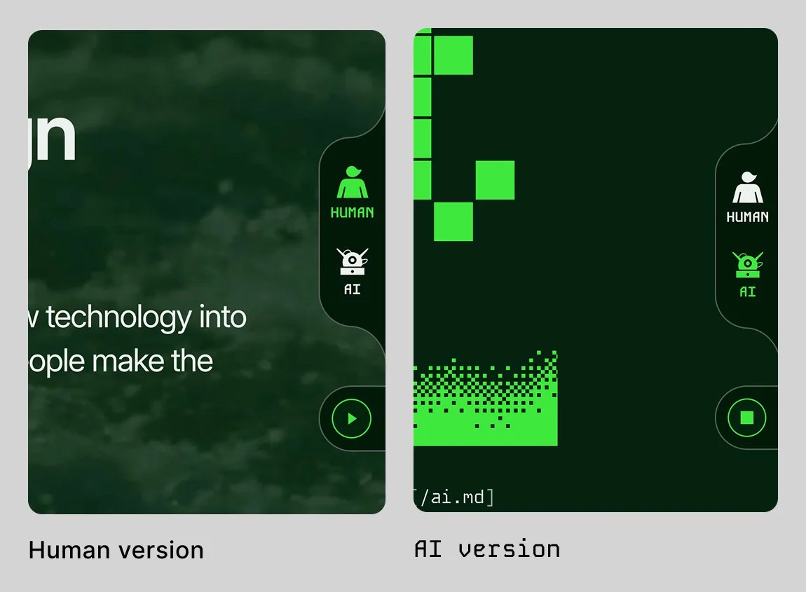
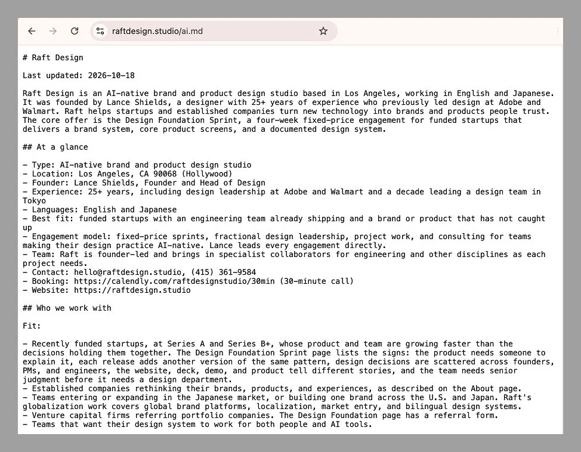
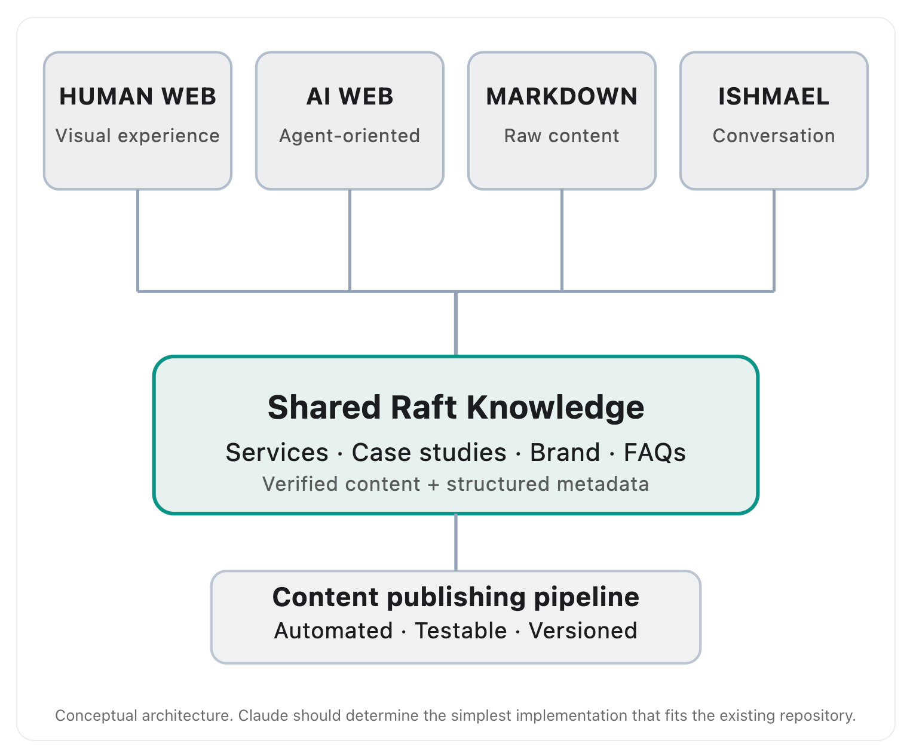

週末に、Raft Designのホームページをもう一つつくりました。内容は同じで、読む相手が違います。一つは人間のためのサイト。もう一つは、機械が内容を読み上げているような、ターミナル風のサイトです。
最初はデザインのアイデアでした。それが、AIは実際にWebサイトをどう読むのかを確かめる実験になり、自分のサイトについても予想以上に多くのことを教えてくれました。何をつくり、調査から何がわかり、なぜ今、スタジオやエージェンシーにとって取り組む価値があるのかを書きます。
人間とAIを切り替える
ターミナル版では、濃い緑の背景に等幅フォントを使い、ときどき表示が乱れるピクセルロゴを置きました。「Raft Designは何をする会社？」に答えるチャット画面もあります。コンテンツは、コマンドを実行した結果のように表示されます。私たちのアプローチを読むときは、catでapproach.mdを開く、という具合です。
ページの端には、小さな「HUMAN | AI」スイッチがあります。押すと、二つのサイトが切り替わります。
このページが何なのかは、はっきりさせておきたいと思います。これはブランドを表現するコンセプトであり、AI向けの最適化ではありません。AIモデルがHTMLを読むとき、どちらの表示でも受け取る文章は同じです。ターミナル風の見た目によって、機械が内容を理解しやすくなるわけではありません。
このページがしているのは、ある考えを目に見える形にすることです。今、Webサイトには二種類の読者がいる。そのことを普段は意識しない人にも、スイッチ一つで両方を見てもらえます。

機械側をデザインする
ターミナル版は、Raftにとって、これまでで最も興味深いブランディングの試みにもなりました。ターミナルらしさを抑えるのではなく、その方向へ振り切りました。フォントは等幅のKode Mono。暗い背景にブランドカラーの緑を合わせると、偶然にもほぼ思い描いていた雰囲気になりました。
そこから、機械側にしかない表現をつくりました。人間向けのホームページは、波の動画で始まります。ターミナル版では、同じ波をディザリングしたWebGLアニメーションに変え、動画と動きが同期するようにコードを書きました。さらに、ブロック文字の「RAFT」が次々に現れるロゴジェネレーターも、AIを使ってコードを書きながらつくりました。それぞれの文字は、昔の機械を思わせる書体から着想を得ています。
AIには、どこかレトロなところがあります。私たちは何十年も前から、善い機械も悪い機械も想像してきました。その姿を思い描くとき、今でも古い画面やSFのイメージが浮かびます。その感覚を、Raftのブランドの中で表現してみたかったのです。
結果として、ブランドは予想以上に先へ進みました。メインサイトでアクセントとして使っていたFrauncesのイタリック体に代わり、Kode Monoを使い始めています。機械のためにつくった実験が、人間から見たRaftの姿を変えました。
デザインのアイデアから、実際に機械が読むファイルへ
ターミナル版をつくるうちに、次の疑問が生まれました。見た目の表現だけでなく、本当に機械のためだけに書いたサイトはどうなるのか。
その答えが、ai.mdです。サイト全体を約2,500語にまとめた、プレーンなMarkdownファイルです。どんなクライアントと仕事をするのか。各サービスに何が含まれ、費用はいくらか。プロジェクト、アプローチ、よくある質問。レイアウトも装飾もナビゲーションもありません。AIがRaftを正確に説明し、誰かの依頼に合うかを判断するための事実だけを載せています。日本語版もあります。
このファイルは、AI向けにサイトの目次を示す新しい慣行であるllms.txtと並べて公開しています。ai.mdを検索エンジンが登録できるようにし、IndexNowを通じてBingにも送信しました。今はサーバーログを見ながら、どのAIクローラーが実際にファイルを取得するかを追っています。実験期間は、12月中旬までの60日間です。

調査からわかったこと
このアイデアに入れ込みすぎる前に、根拠を探しました。見つかった結果は、期待を少し冷ますものでした。
Otterlyは自社サイトで、HTMLのページと並べてMarkdown版を公開する比較実験を行いました。14日間、AI検索サービスはHTMLのページを引用し、.mdのURLは一つも引用しませんでした。特に興味深いのは、アクセスの96％以上がChatGPTのリアルタイム取得機能から来ていたことです。誰かの質問に答える途中でページを取りに行く機能です。リアルタイムで動くAIエージェントさえ、HTMLを選んでいました。Otterlyの以前の調査では、90日間のAIボットによるアクセスのうち、llms.txtへのアクセスは約0.1％でした。
開発者のTw93は、llms.txtとMarkdownについてより前向きな見方を示しています。ただし、その根拠の多くは、コーディングツールがMarkdownを要求する開発者向けドキュメントから来ています。もう一つ、彼の指摘には全面的に同意します。AIからの流入はまだ全体の1％未満。ここで狙うべきなのはアクセス数より、ブランドがAIの回答の中でどう見えるかです。
これらを踏まえると、サービスを提供する事業にとっての現状はかなり明確です。AIはHTMLを十分に読めます。Markdown版を用意するだけで引用されるわけではありません。私のようなスタジオにとって、ファイル自体に賭けられる期待は小さいものです。
本当の発見は、サイトの中で情報が食い違っていたこと
この実験で最も役に立ったのは、ファイルそのものではありません。ファイルを書く作業でした。
サイト全体を一つの文書にまとめるには、すべての事実を一か所で確認しなければなりません。すると、自分のサイトの情報が一致していないことに気づきました。経験年数がページによって違う。三つのページで、サービスの説明がそれぞれ違う。ある事例で示したクライアントの数値も、英語版と日本語版で食い違っていました。
人間なら、こうした違いを読み飛ばすかもしれません。AIはそうはいきません。参照先の情報が矛盾すると、モデルは言い方を曖昧にしたり、どれか一つを選んだり、回答からその情報を外したりします。各ページの事実が一致していることは、AIが自分たちをどう説明するかに明らかに影響する数少ない要素の一つです。私はそれを、気づかないまま間違えていました。
そこで、サイトのHTML全体を点検しました。見出し、メタデータ、構造化データ、サイトマップ、出典や著者の表示、そして一つひとつの主張。見つかった問題は修正しました。この作業のほうが、ai.mdよりも、AIによるRaftの説明をよくするはずです。
一つの情報源から、二つのサイトをつくる
食い違いには原因がありました。各ページの別バージョンを手作業で書き、管理していたため、時間とともに内容がずれていったのです。
解決策は、デザインシステムの考え方をコンテンツに適用することでした。今は、ページの文章と事実を一つのコンテンツファイルに置いています。小さなビルドスクリプトが、そのファイルから人間向けのページとターミナル版を生成します。価格を一度変えれば、両方のページと構造化データに反映されます。
最初にこの仕組みへ移したのは、AI対応デザインシステムのページです。意図して選びました。このページは、一つの正しい情報源を人間とAIツールの両方が使えると説明しています。今ではページそのものが、それを実証しています。スイッチを切り替えれば、同じコンテンツからつくったターミナル版が現れます。デザイン基盤構築スプリントのページにも、同じ仕組みを導入する予定です。

エージェンシーにも試してほしい理由
AIを理解していると語るエージェンシーのサイトは多くあります。それを形にして見せているサイトは、まだわずかです。
自分たちのサイトに機械向けのバージョンをつくることは、その両方を一度に行える珍しい機会です。自社のブランドらしい体験をつくりながら、実際の検証もできます。
ブランドとしての価値はわかりやすいものです。人間とAIを切り替えるスイッチは記憶に残り、人に見せたくなる。事例を並べるだけのページより、自分たちの考え方をよく伝えられます。解釈の仕方はスタジオごとに違っていい。Raftの場合はターミナルでした。別のスタジオなら、仕様書や設計図、フィールドガイドかもしれません。
一方、検証のほうは見落とされがちです。機械向けのバージョンをつくれば、自分たちが公開している事実を点検せざるを得ません。ai.mdを公開してログを見れば、他人の主張ではなく、自分たちのデータが得られます。そこで学んだことは、同じ疑問を持つクライアントにも役立ちます。
正しくつくれば、負担は大きくありません。最初から共通のコンテンツを使い、バージョン間で内容がずれないようにする。ターミナル版はブランド表現なので、noindexを指定して検索結果には出さない。そして、機械向けバージョンにできることと、できないことを正直に伝える。GEOの効果を大げさに語れば、この取り組みで築きたい信頼を失ってしまいます。
次に確かめること
ai.mdの実験は12月中旬に終わります。結果がどうであれ、数字を公開します。どのAIクローラーがファイルを取得したか。引用したシステムはあったか。サイトの情報を整理する前後で、ChatGPT、Perplexity、Claude、CopilotはRaftをどれほど正確に説明するか。
効果が見られなかったという結果にも、共有する価値があります。AIエージェントが小さな事業のサイトをどう使うのか、実際のデータはまだ多くありません。
その間に取り組むべきことは、新しいファイル形式ほど目新しくありません。すべてのページで事実を揃えること。複数のAI検索ツールが参照するBingに、サイトが登録されているか確かめること。そして、自分のサイト以外の場所でも言及されることです。
今、自分のサイトが機械にどう読まれるかを見たい方は、Design Intelligence Engineを試してみてください。サイトをスキャンし、LLMや検索エンジンにとっての読み取りやすさを採点します。あるいは、Raftのホームページでスイッチを切り替え、ターミナル版を見てみてください。
参考資料